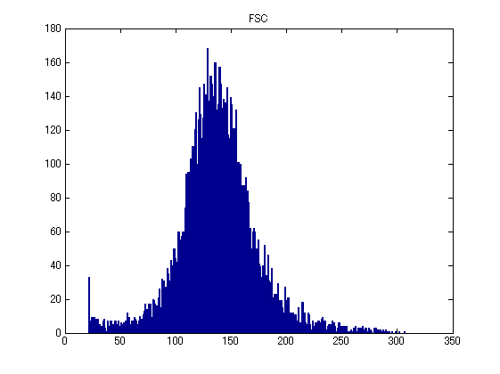
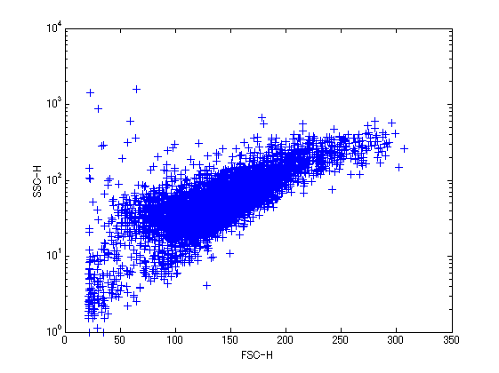
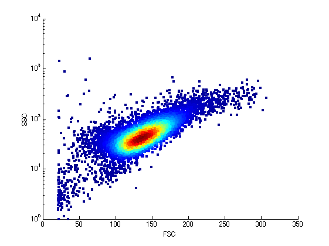
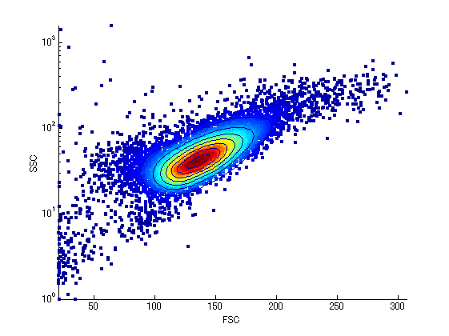

Flow Cytometry Data Reader and Plotting Example
Flow cytometry is a method for quantitating components or structural features of cells primarily by optical means. Although it makes measurements on one cell at a time, it can process thousands of cells in a few seconds. Since different cell types can be distinquished by quantitating structural features, flow cytometry can be used to count cells of different types in a mixture[1].
Contents
Importing Data
The standard output of a flow cytometry machine is an FCS file. This is somehow related to FACS (Fluorescence-Activated Cell Sorter) machines, which are made by Becton-Dickinson. These are binary files with a fairly complex format. The function fcsread can read what seems to be the most common flavour of FCS files. The output is an array with each column representing a different parameter. Some of these are measured on a linear scale, others are measured on a log scale. The second output is a structure giving information about the parameters.
[data,params] = fcsread('SampleFACS.fcs');
Visualizing the Data
A histogram of one parameter is one way to look at the data.
hist(data(:,1),max(data(:,1))-min(data(:,1))); title(params(1).LongName);
A more interesting way to look at the data is to create a scatter plot of two of the parameters. In this case the second paramter is measured on a log scale.
numDecades = params(2).Amplification(1);
theRange = params(2).Range;
semilogy(data(:,1),10.^(data(:,2)/(theRange/numDecades)),'+');
xlabel(params(1).Name); ylabel(params(2).Name);
 An even better visualization is to look at the scatter plot coloured by density of the scatter. The function dscatter does this. dscatter colors the plot by density of the scatter. This implementation is based on a paper by Eilers & Goeman [2].
dscatter(data(:,1),10.^(data(:,2)/256),'log',true)
xlabel(params(1).LongName); ylabel(params(2).LongName);
 A second call to dscatter adds contours.
hold on dscatter(data(:,1),10.^(data(:,2)/256),'log',true,'plottype','contour') hold off
References
[1] http://www.bio.umass.edu/mcbfacs/intro.htm
[2] Paul H. C. Eilers and Jelle J. Goeman, Enhancing scatterplots with smoothed densities, Bioinformatics, Mar 2004; 20: 623 - 628.
Thanks to John Albeck at MIT for suggestions and sample data.